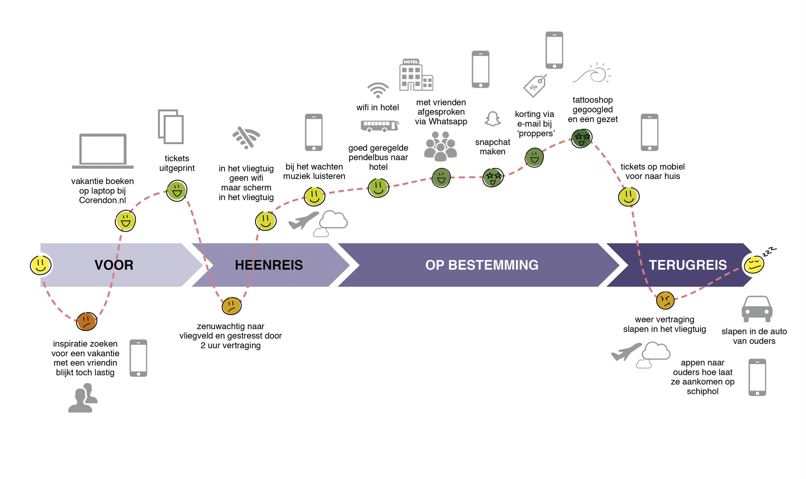
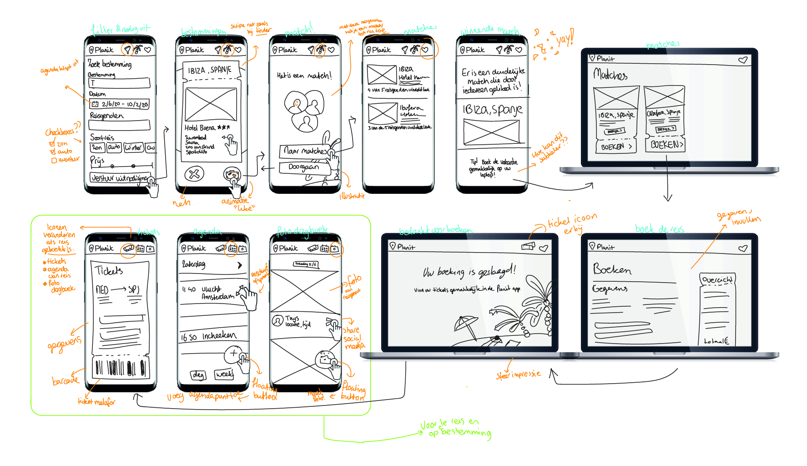
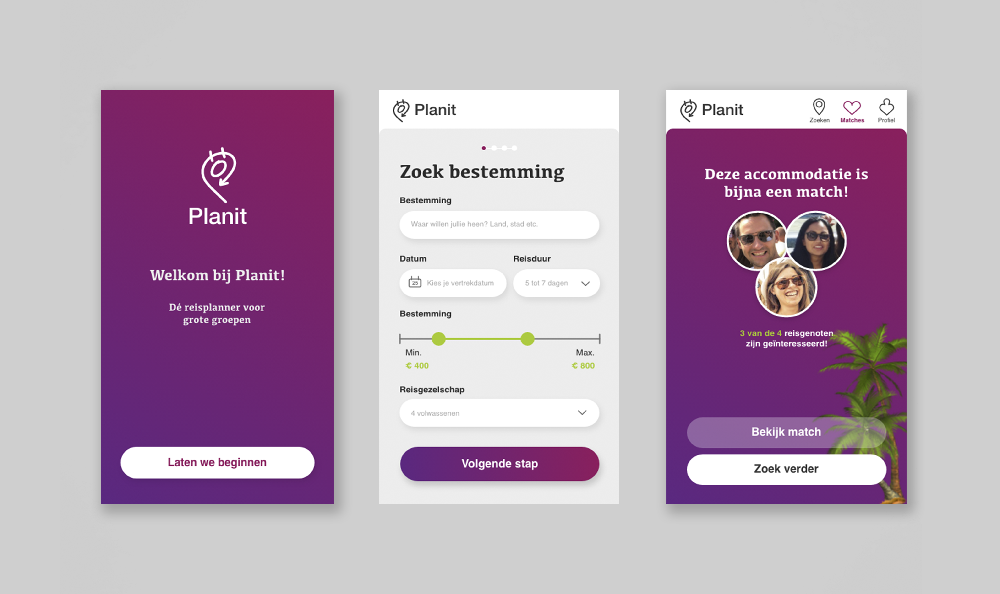

Planit Reisplanner
Huidig project // Multi-device // Prototype // Adobe XD
De opdracht
Bedenk een reisgids die in meerdere fases van de reis/vakantie gebruikt kan worden. Hierbij wordt gedacht aan een multi-device applicatie.
Wat
Planit is een applicatie voor het plannen van een reis met een groep. Vul je wensen in (budget, locatie, type reis) en verstuur de uitnodiging naar iedereen die mee gaat. Nu kan ieder op zijn eigen gemak een accomodatie kiezen. Wanneer meerdere dezelfde reis 'liken' is er een match! De reis kan geboekt worden. Wanneer de groep op vakantie is, kunnen ze in de app een gezamenlijke vakantie agenda bijhouden en hun gemaakte foto's delen met elkaar.
Hoe
In de beginfase ben ik begonnen met het maken van een customer journey en gaan kijken waar reizigers tegenaan lopen voor, tijdens en na een vakantie. Vanuit hier ben ik een concept gaan opbouwen en ben ik mij gaan focussen op mensen die in een groep op vakantie willen gaan. Het is voor hun lastig om een bestemming/accommodatie te kiezen door de verschillende meningen en eisen aan een vakantie.
Voor het idee heb ik een wireflow geschetst en die ben ik momenteel aan het uitwerken in Adobe XD. Deze schermen geven een indicatie over hoe het gaat worden:
